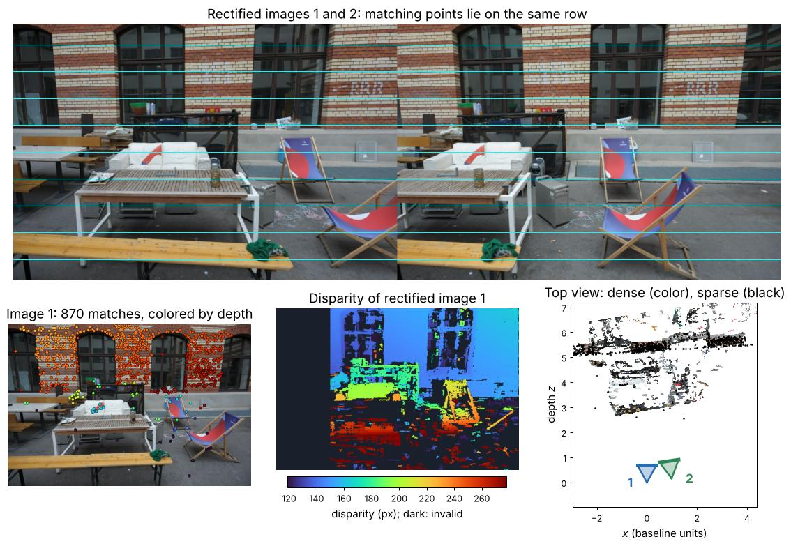

Homework 11: 3D Reconstruction
Total: 5 points Submission: Gradescope Programming Assignment Work: Individual
Objective
You will reconstruct a scene in 3D from two photos, following Lectures 13 and 14. First, estimate the relative pose of the two cameras and triangulate the matched features (sparse reconstruction). Then, rectify the photos and compute a dense reconstruction with stereo matching. You will run your code on a supplied image pair and on two photos you take, using your HW10 calibration.

Use the course cv Conda environment. You may adapt the lecture examples. Do not use generative AI to solve this homework.
Starter files
Download hw11_Starter.zip and extract it into one folder. It contains:
| File | Purpose |
|---|---|
| hw11.py | Complete the three functions described below |
evaluate.py |
Run the public tests and save result images and point clouds |
hw11_support.py |
Provided loading, checks, and figures |
public/ |
Photos, calibration, and test inputs |
calibration_template.json |
Template for your HW10 calibration |
Keep evaluate.py and hw11_support.py unchanged. You may add helper functions to hw11.py. Use only cv2, numpy, matplotlib, and the Python standard library in hw11.py. Keep computation inside functions, so importing hw11.py does not run anything.
Part 1 — Sparse reconstruction
def reconstruct_sparse(image1, image2, K, dist):
...
return pts1, pts2, R, t, XThe inputs are two BGR photos of the same size, the intrinsic matrix \(\mathbf{K}\), and the distortion coefficients dist from calibration.
- Detect and match features between the two photos (e.g., SIFT with the ratio test).
- Remove lens distortion from the matched points with
cv2.undistortPoints(..., P=K). - Estimate the essential matrix with
cv2.findEssentialMatusing RANSAC. - Recover the relative pose with
cv2.recoverPose, and keep its inliers. - Triangulate the inliers with
cv2.triangulatePoints, with camera 1 as the reference frame.
| Output | Shape | Meaning |
|---|---|---|
pts1, pts2 |
(N, 2) |
Matched pixels in image1 and image2, as detected (before undistortion) |
R |
(3, 3) |
Rotation \({}^{2}\mathbf{R}_{1}\) of camera 2 relative to camera 1 |
t |
(3, 1) |
Translation \({}^{2}\mathbf{t}_{1}\), so that \({}^{2}\mathbf{X} = {}^{2}\mathbf{R}_{1}\,{}^{1}\mathbf{X} + {}^{2}\mathbf{t}_{1}\) |
X |
(N, 3) |
Triangulated points \({}^{1}\mathbf{X}\) in camera 1’s frame; row i belongs to match i |
Return at least 8 matches. As in the lecture, t has unit length, so X is in baseline units.
Part 2 — Rectification
def rectify_pair(image1, image2, K, dist, R, t):
...
return rect1, rect2, R1, R2, P1, P2, QUse the given pose R, t (camera 2 relative to camera 1):
- Call
cv2.stereoRectifywithK,dist, the image size(w, h),R, andt. - Warp both photos with
cv2.initUndistortRectifyMapandcv2.remap.
Return the rectified BGR images rect1, rect2 (same size as the inputs) and the outputs R1, R2, P1, P2, Q of cv2.stereoRectify.
Part 3 — Dense reconstruction
def reconstruct_dense(rect1, rect2, Q):
...
return disparity, valid, points- Compute the disparity with
cv2.StereoBMorcv2.StereoSGBM, and divide it by 16 to get pixels. - Compute the 3D points with
cv2.reprojectImageTo3DandQ.
| Output | Shape | Meaning |
|---|---|---|
disparity |
(H, W) |
Disparity in pixels (float32) |
valid |
(H, W) |
Boolean: True where the disparity was found and the 3D point is finite with positive depth |
points |
(H, W, 3) |
3D points in rectified camera 1’s frame |
You choose the matcher and its parameters. The amount and quality of the dense reconstruction are not graded.
Take your own photos
Every student must take their own photos. Copied or shared photos receive zero for the homework.
- Use your HW10 camera settings. Use the same camera, zoom, and orientation (landscape or portrait) as your HW10 photos.
- Take two photos of a static scene with objects at different depths and plenty of texture. Avoid blank walls, reflections, and moving objects.
- Move the camera sideways between the two photos (about a step), keeping most of the scene in both. Do not just rotate in place.
- Save them in a folder named
photos/asimage1.jpgandimage2.jpg(or PNG), and run the evaluator on them (see below).
Full-resolution photos are fine: photos wider than 1600 pixels are resized before your code runs, and K is scaled to match. If your phone saves HEIC, export the photos as JPEG.
Calibration file. Put your HW10 calibration in photos/calibration.json. calibration_template.json shows the format: K is a 3×3 nested list, dist lists the five coefficients \((k_1, k_2, p_1, p_2, k_3)\), and image_size is [width, height] of your HW10 photos (see public/calibration.json for a filled example). To write the file from your HW10 code, save the lines below as save_calibration.py in your HW10 folder, run python save_calibration.py there, and copy the resulting calibration.json into photos/:
import json
import hw10
from hw10_support import PATTERN_SIZE, load_photos, square_size_mm
paths, images = load_photos("photos")
rms, K, dist, rvecs, tvecs = hw10.calibrate_camera(images, PATTERN_SIZE, square_size_mm(hw10))
h, w = images[0].shape[:2]
with open("calibration.json", "w") as f:
json.dump({"K": K.tolist(), "dist": dist.ravel().tolist(), "image_size": [w, h]}, f, indent=2)
print("Saved calibration.json")Run and inspect
From the extracted starter folder:
conda activate cv
python evaluate.py
python evaluate.py --photos photosThe first command runs the public tests on the image pair and prints your public score. The second command runs your three functions in sequence on your own photos. Each command saves reconstruction.jpg (like the figure above), and the point clouds sparse.ply and dense.ply, which you can open in MeshLab or CloudCompare. These results are for checking your work; do not submit them.
Tests and grading
Each function is tested separately, with our inputs: rectify_pair gets the true pose and reconstruct_dense gets a correctly rectified pair. So an error in one part does not affect the others. Each test passes or fails as a whole.
| Test | Passes when | Public | Private |
|---|---|---|---|
| Relative pose | findEssentialMat with RANSAC and recoverPose are used; rotation error ≤ 5° and translation-direction error ≤ 20° |
0.4 | 0.4 |
| Triangulation | triangulatePoints is used; ≥ 90% of the points are in front of both cameras; median reprojection error ≤ 3 px |
0.4 | 0.4 |
| Rectification | stereoRectify uses the given R, t; both images are warped; matching points are on the same row (median ≤ 3 px) |
0.4 | 0.4 |
| Stereo disparity | StereoBM or StereoSGBM is used; the disparity is in pixels; valid has True pixels |
0.4 | 0.4 |
| Dense 3D points | reprojectImageTo3D uses the given Q; valid points are finite with positive depth |
0.4 | 0.4 |
| Subtotal | 2 | 2 |
The public tests use the image pair, and the private tests use a different pair. Your own photos earn 1 point: 0.5 for two different photos with a matching calibration.json, and 0.5 if all three functions run on them. The reconstruction of your own photos is not graded.
After each submission, Gradescope shows the full results of the public tests and your own photos, and the number of private tests passed. Private test details are released after the late deadline.
Submission
Submit hw11.py, your two photos, and calibration.json. Upload them together, or upload one ZIP file that contains hw11.py and your photos/ folder. Do not submit the evaluator, support file, public files, or results.
You have five Gradescope submissions. Submissions 6 and later receive zero for that submission; earlier submissions remain unchanged. Gradescope autograder failures do not count, while errors in your code do.
The regular course late policy allows submission for one additional week, with a 20% penalty. Work submitted after that period receives zero. The autograder reports the raw score before any late penalty.